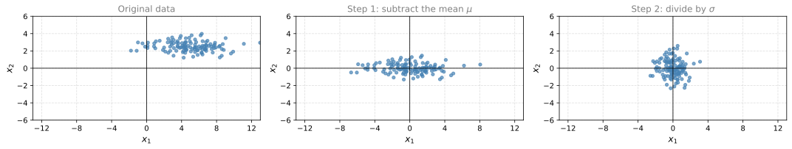
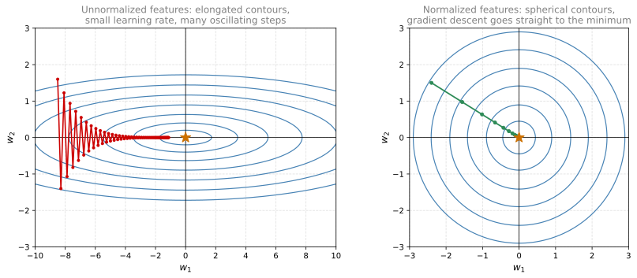
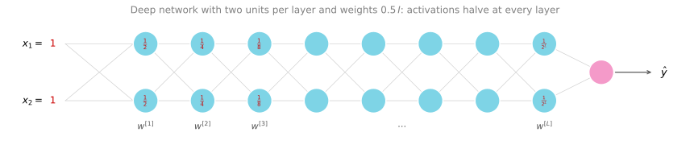
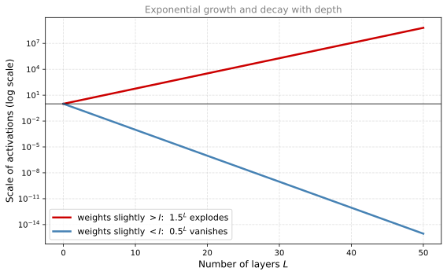
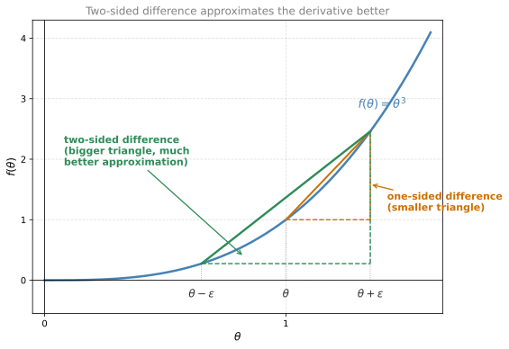

Setting Up Your Optimization Problem
deep-learning
optimization
initialization
gradient-checking
Input normalization, vanishing and exploding gradients, careful weight initialization, and gradient checking to verify backpropagation.
The previous page covered techniques for reducing overfitting. This page turns to the optimization problem itself, with tricks that make training faster and more reliable. It covers normalizing the inputs, the problem of vanishing and exploding gradients, the weight initialization that partially fixes it, and gradient checking, a debugging technique for verifying that your implementation of backpropagation is correct.
Normalizing Inputs
When training a neural network, one of the techniques to speed up training is to normalize your inputs. Consider a training set with two input features, so \(x\) is two-dimensional. Normalizing the inputs corresponds to two steps.
Step 1, subtract out the mean. Compute the mean vector and shift every training example by it.
\[ \mu = \frac{1}{m} \sum_{i=1}^{m} x^{(i)}, \qquad x := x - \mu \]
Here \(\mu\) is a vector with one entry per feature. This step just moves the training set until it has zero mean.
Step 2, normalize the variances. In the picture below, the feature \(x_1\) has a much larger variance than the feature \(x_2\). Compute the vector of per-feature variances
\[ \sigma^2 = \frac{1}{m} \sum_{i=1}^{m} \left( x^{(i)} \right)^{2} \]
where the squaring is elementwise. Since the mean has already been subtracted out, each elementwise square is just the variance of that feature. Then divide each example, elementwise, by the standard deviation \(\sigma\). After this step the variance of \(x_1\) and the variance of \(x_2\) are both equal to one.
ImportantUse the Same \(\mu\) and \(\sigma\) for the Test Set
If you use these steps to scale your training data, then use the same \(\mu\) and \(\sigma\) to normalize your test set. Do not estimate \(\mu\) and \(\sigma^2\) separately on the training set and the test set. You want both training and test examples to go through the exact same transformation, defined by the same \(\mu\) and \(\sigma^2\) calculated on your training data.
Why Normalize the Inputs
Recall the cost function
\[ J(w, b) = \frac{1}{m} \sum_{i=1}^{m} \mathcal{L}(\hat{y}^{(i)}, y^{(i)}) \]
If you use unnormalized input features, it is more likely that your cost function looks like a very squished out, very elongated bowl. Say the feature \(x_1\) ranges from 1 to 1,000 and the feature \(x_2\) ranges from 0 to 1. Then the range of values for the parameters \(w_1\) and \(w_2\) ends up being very different, and if you plot the contours of the cost function, you get a very elongated shape. If instead you normalize the features, the cost function on average looks more symmetric, with more spherical contours.

If you run gradient descent on a cost function like the one on the left, you might have to use a very small learning rate, because gradient descent may need a lot of steps, oscillating back and forth, before it finally finds its way to the minimum. With more spherical contours, wherever you start, gradient descent can pretty much go straight to the minimum, taking much larger steps rather than oscillating around.
Of course in practice \(w\) is a high dimensional vector, so trying to plot this in 2D does not convey all the intuitions correctly. But the rough intuition holds. The cost function is rounder and easier to optimize when the features are all on similar scales, not from 1 to 1,000 for one and 0 to 1 for another, but mostly from minus 1 to 1, or at least with similar variances as each other.
In practice, if one feature ranges from 0 to 1, another from minus 1 to 1, and a third from 1 to 2, these are fairly similar ranges and training will work just fine. The real damage happens when features are on dramatically different ranges, such as one from 1 to 1,000 and another from 0 to 1. Setting all features to zero mean and variance one guarantees a similar scale and usually helps the learning algorithm run faster. If your features already come in on similar scales, this step matters less, although performing this type of normalization pretty much never does any harm, so it is often done anyway when in doubt.
Review Questions
1. What are the two steps of input normalization, and what does the training set look like afterwards?
TipAnswer
Step 1 subtracts the mean, \(\mu = \frac{1}{m} \sum_i x^{(i)}\) followed by \(x := x - \mu\), which moves the training set to zero mean. Step 2 computes the per-feature variance vector \(\sigma^2 = \frac{1}{m} \sum_i (x^{(i)})^2\) (elementwise squaring, after the mean has been removed) and divides each example elementwise by \(\sigma\). Afterwards every feature has zero mean and variance one.
1. You normalize the training set with its own \(\mu\) and \(\sigma\), and the test set with a separate \(\mu\) and \(\sigma\) estimated on the test set. What is wrong?
TipAnswer
The training and test data no longer go through the same transformation, so an input processed at test time is not on the scale the network was trained on. The rule is to compute \(\mu\) and \(\sigma^2\) on the training data once, and then use those same values in the same two formulas to scale the test set.
1. Why does gradient descent converge faster on normalized inputs?
TipAnswer
With features on very different scales, the parameters take on very different ranges of values and the cost function becomes a very elongated bowl. Gradient descent then needs a small learning rate and many steps that oscillate back and forth across the narrow valley. With normalized features the contours are more spherical, so gradient descent can take larger steps and head fairly directly to the minimum.
1. Feature \(x_1\) ranges from 0 to 1, \(x_2\) from minus 1 to 1, and \(x_3\) from 1 to 2. Is normalization essential here?
TipAnswer
Not really. These ranges are already fairly similar, so training will work just fine without normalization. The step becomes important when ranges differ dramatically, such as 1 to 1,000 versus 0 to 1. That said, normalization pretty much never does any harm, so it is often applied anyway when you are not sure whether it will help.
1. Which of the following is the correct expression to normalize the input \(x\)?
\(x = \frac{1}{m} \sum_{i=1}^{m} x^{(i)}\)
\(x = \dfrac{x - \mu}{\sigma}\)
\(x = \dfrac{x}{\sigma}\)
\(x = \frac{1}{m} \sum_{i=1}^{m} \left( x^{(i)} \right)^2\)
TipAnswer
b. Subtracting \(\mu\) shifts the mean of the input to the origin, and dividing by \(\sigma\) makes the variance one in each coordinate. Option (a) is the formula for the mean \(\mu\) itself, and (d) is the formula for the variance vector \(\sigma^2\) once the mean has been removed; neither is the transformation applied to \(x\). Option (c) scales the variance but forgets to zero out the mean first.
Vanishing and Exploding Gradients
One of the problems of training neural networks, especially very deep ones, is vanishing and exploding gradients. When you train a very deep network, your derivatives or slopes can sometimes get either very, very big or very, very small, maybe even exponentially small, and this makes training difficult.
To see where this comes from, take a very deep network with parameters \(w^{[1]}, w^{[2]}, \ldots, w^{[L]}\), and to keep the math simple make two assumptions. The activation function is linear, \(g(z) = z\), and every bias is zero, \(b^{[l]} = 0\). In that case the output is just the product of all the weight matrices applied to the input.
\[ \hat{y} = w^{[L]} \, w^{[L-1]} \cdots w^{[2]} \, w^{[1]} \, x \]
To check this, \(z^{[1]} = w^{[1]} x\) since \(b = 0\), and \(a^{[1]} = g(z^{[1]}) = z^{[1]}\) because the activation is linear, so \(a^{[1]} = w^{[1]} x\). By the same reasoning \(a^{[2]} = w^{[2]} w^{[1]} x\), and so on, until the product of all the matrices gives \(\hat{y}\).
Now suppose each weight matrix is just a little bit larger than the identity,
\[ w^{[l]} = \begin{bmatrix} 1.5 & 0 \\ 0 & 1.5 \end{bmatrix} = 1.5 \, I \]
(technically the last matrix has different dimensions, so say this holds for the rest of them). Then
\[ \hat{y} = w^{[L]} \begin{bmatrix} 1.5 & 0 \\ 0 & 1.5 \end{bmatrix}^{L-1} x \]
so \(\hat{y}\) grows essentially like \(1.5^{L}\). For a very deep network, a large \(L\), the value of \(\hat{y}\) explodes exponentially with the number of layers.
Conversely, replace 1.5 with 0.5, so each matrix is a little bit less than the identity. Then the factor becomes \(0.5^{L-1}\), and if the input were \(x_1 = x_2 = 1\), the activations would be one half, one half, then one fourth, one fourth, one eighth, one eighth, and so on, down to \(1 / 2^{L}\). In a very deep network the activations decrease exponentially with depth.

The intuition to take away is this. If the weights \(w\) are all just a little bit bigger than one, or a little bit bigger than the identity matrix, then with a very deep network the activations can explode. If \(w\) is just a little bit less than the identity, say with 0.9 on the diagonal, then the activations decrease exponentially. And although the argument here is stated in terms of activations, a similar argument shows that the derivatives, the gradients computed by backpropagation, also increase or decrease exponentially as a function of the number of layers.

Some modern neural networks have around \(L = 150\) layers (Microsoft got great results with a 152 layer network). With such depth, if activations or gradients grow or shrink exponentially in \(L\), the values can get really big or really small, and training becomes difficult. In particular, if the gradients are exponentially small, gradient descent takes tiny little steps and needs a very long time to learn anything. For a long time this problem was a huge barrier to training deep neural networks. It turns out there is a partial solution that does not completely solve the problem but helps a lot, which is a careful choice of how you initialize the weights.
Review Questions
1. Under the simplifying assumptions \(g(z) = z\) and \(b^{[l]} = 0\), what does the output of a deep network reduce to, and why does that cause trouble?
TipAnswer
The output reduces to the product of all the weight matrices applied to the input, \(\hat{y} = w^{[L]} w^{[L-1]} \cdots w^{[1]} x\). If each matrix is slightly larger than the identity, say \(1.5 I\), the product grows like \(1.5^{L}\) and the activations explode. If each is slightly smaller, say \(0.5 I\), the product shrinks like \(0.5^{L}\) and the activations vanish. The same exponential behavior applies to the gradients, not just the activations.
1. Why do exponentially small gradients make training slow?
TipAnswer
Gradient descent updates the parameters in steps proportional to the gradient. If the gradients are exponentially small in the number of layers, each update is a tiny little step, and it takes a very long time for gradient descent to learn anything.
Weight Initialization for Deep Networks
A partial solution to the vanishing and exploding gradients problem, one that does not solve it entirely but helps a lot, is a better or more careful choice of the random initialization for your neural network.
Single Neuron Intuition
Start with a single neuron with \(n\) input features \(x_1, \ldots, x_n\), computing \(a = g(z)\) where (ignoring \(b\), so set \(b = 0\))
\[ z = w_1 x_1 + w_2 x_2 + \cdots + w_n x_n \]
For \(z\) not to blow up and not to become too small, notice that the larger \(n\) is, the smaller you want each \(w_i\) to be, because \(z\) is the sum of \(n\) terms \(w_i x_i\). If you are adding up a lot of terms, you want each term to be smaller. One reasonable thing to do is to set the variance of each \(w_i\) to be \(\frac{1}{n}\), where \(n\) is the number of input features going into the neuron.
General Rule per Layer
In a deep network, the inputs to layer \(l\) are the \(n^{[l-1]}\) activations of the previous layer, so the same idea gives, in code,
W_l = np.random.randn(shape) * np.sqrt(1 / n_prev) # n_prev = n^{[l-1]}Multiplying a Gaussian random variable by \(\sqrt{\frac{1}{n^{[l-1]}}}\) sets its variance to \(\frac{1}{n^{[l-1]}}\).
It turns out that if you are using a ReLU activation function, setting the variance to \(\frac{2}{n}\) works a little bit better, so you often see this in initialization when the activation is ReLU. This version, from a paper by He et al., uses
\[ \text{Var}(w_i) = \frac{2}{n^{[l-1]}} \qquad \Longrightarrow \qquad w^{[l]} = \texttt{np.random.randn(shape)} \times \sqrt{\frac{2}{n^{[l-1]}}} \]
If the input activations are roughly mean 0 and variance 1, this causes \(z\) to also take on a similar scale. It does not solve the vanishing and exploding gradients problem, but it definitely helps reduce it, because it tries to set each weight matrix \(w^{[l]}\) so that it is not too much bigger than 1 and not too much less than 1, so activations do not explode or vanish too quickly.
Other Variants
A few other variants exist for other activation functions.
- tanh activation. A paper shows it is better to use the constant 1 instead of 2, that is, multiply by \(\sqrt{\frac{1}{n^{[l-1]}}}\). This is called Xavier initialization.
- Another version, taught by Yoshua Bengio and colleagues and seen in some papers, uses \(\sqrt{\frac{2}{n^{[l-1]} + n^{[l]}}}\), with its own theoretical justification.
If you are using a ReLU activation function, which is really the most common one, the He formula with the constant 2 is the recommended choice. If you are using tanh, try the Xavier version instead.
In practice, all of these formulas just give you a starting point, a default value for the variance of the initialization of the weight matrices. If you wish, this variance parameter could be one more thing to tune among your hyperparameters. You could have another multiplier on the formula and tune it as part of the hyperparameter search. Tuning it sometimes has a modest effect. It is not one of the first hyperparameters to try tuning, but on some problems tuning it helps a reasonable amount. It sits fairly low in the importance ordering relative to the other hyperparameters.
Hopefully this makes your weights not explode too quickly and not decay to zero too quickly, so you can train a reasonably deep network without the weights or the gradients exploding or vanishing too much. This is another trick that helps neural networks train much more quickly.
Review Questions
1. Why should the initial weights of a neuron be smaller when it has more inputs?
TipAnswer
Because \(z = w_1 x_1 + \cdots + w_n x_n\) is a sum of \(n\) terms. The larger \(n\) is, the more terms are being added up, so each term needs to be smaller for \(z\) not to blow up. Setting the variance of each \(w_i\) to something like \(\frac{1}{n}\) (or \(\frac{2}{n}\) for ReLU) keeps \(z\) on a reasonable scale when the inputs have roughly mean 0 and variance 1.
1. Match the initialization scaling to the situation. Which factor is recommended for a layer with ReLU activation?
\(\sqrt{\dfrac{1}{n^{[l-1]}}}\)
\(\sqrt{\dfrac{2}{n^{[l-1]}}}\)
\(\sqrt{\dfrac{2}{n^{[l-1]} + n^{[l]}}}\)
No scaling, plain
np.random.randn
TipAnswer
b. For ReLU, the most common activation function, setting the variance to \(\frac{2}{n^{[l-1]}}\) (He et al.) works a little better. Option (a) with the constant 1 is Xavier initialization, appropriate for tanh. Option (c) is the variant by Bengio and colleagues. All of these are starting-point defaults rather than exact rules.
1. Does careful weight initialization solve the vanishing and exploding gradients problem?
TipAnswer
No, it is a partial solution. It does not completely solve the problem, but it helps a lot, because it sets each weight matrix so that it is not too much bigger than 1 and not too much less than 1, which keeps the activations and gradients from exploding or vanishing too quickly. The variance multiplier can even be treated as a hyperparameter, though it is usually a low-priority one to tune.
Numerical Approximation of Gradients
When you implement backpropagation, there is a test called gradient checking that can really help you make sure your implementation is correct, because sometimes you write down all these equations and you are just not 100% sure you got all the details right. To build up to gradient checking, first look at how to numerically approximate the derivative of a function.
Take the function \(f(\theta) = \theta^3\) and start at \(\theta = 1\). Instead of nudging \(\theta\) only to the right to get \(\theta + \epsilon\), nudge it in both directions to get \(\theta - \epsilon\) and \(\theta + \epsilon\), with \(\epsilon = 0.01\), so the two points are 0.99 and 1.01.

Rather than taking the little triangle between \(\theta\) and \(\theta + \epsilon\) and computing its height over its width, you get a much better estimate of the gradient by taking the bigger triangle spanning \(\theta - \epsilon\) to \(\theta + \epsilon\). Intuitively, the big triangle takes both the lower-left and the upper-right small triangles into account, so instead of a one-sided difference you are taking a two-sided difference.
Work out the math. The height of the big triangle is \(f(\theta + \epsilon) - f(\theta - \epsilon)\), and its width is \(2\epsilon\), so the approximation is
\[ \frac{f(\theta + \epsilon) - f(\theta - \epsilon)}{2\epsilon} \approx g(\theta) \]
where \(g(\theta)\) is the claimed derivative. Plug in the values for \(f(\theta) = \theta^3\) at \(\theta = 1\) with \(\epsilon = 0.01\).
\[ \frac{(1.01)^3 - (0.99)^3}{2 \times 0.01} = \frac{1.030301 - 0.970299}{0.02} = 3.0001 \]
The true derivative is \(g(\theta) = 3\theta^2 = 3\) at \(\theta = 1\), so the two values are very close. The approximation error is 0.0001. With the one-sided difference, \(\frac{f(\theta + \epsilon) - f(\theta)}{\epsilon}\), you would have gotten 3.0301, an approximation error of 0.03 rather than 0.0001. The two-sided difference gives much greater confidence that \(g(\theta)\) really is a correct implementation of the derivative of \(f\).
The cost is speed. Used for gradient checking, the two-sided difference runs twice as slow as the one-sided version, but in practice it is worth it because it is so much more accurate.
NoteOptional Theory, Why the Error is \(O(\epsilon^2)\)
For readers more familiar with calculus, the formal definition of the derivative is
\[ f'(\theta) = \lim_{\epsilon \to 0} \frac{f(\theta + \epsilon) - f(\theta - \epsilon)}{2\epsilon} \]
For a nonzero value of \(\epsilon\), one can show the error of this two-sided approximation is on the order of \(\epsilon^2\), written \(O(\epsilon^2)\). Since \(\epsilon\) is a very small number, if \(\epsilon = 0.01\) then \(\epsilon^2 = 0.0001\). Big O notation means the error is some constant times \(\epsilon^2\), and in the example above that constant happens to be 1, which matches the error of 0.0001 exactly.
In contrast, the one-sided formula \(\frac{f(\theta + \epsilon) - f(\theta)}{\epsilon}\) has error on the order of \(\epsilon\), that is \(O(\epsilon)\). When \(\epsilon\) is a number less than 1, \(\epsilon\) is much bigger than \(\epsilon^2\), which is why the one-sided formula is a much less accurate approximation. This is exactly why gradient checking uses the two-sided difference.
Review Questions
1. For \(f(\theta) = \theta^3\) at \(\theta = 1\) with \(\epsilon = 0.01\), compute the two-sided difference approximation and its error against the true derivative.
TipAnswer
The two-sided difference is \(\frac{(1.01)^3 - (0.99)^3}{0.02} = \frac{1.030301 - 0.970299}{0.02} = 3.0001\). The true derivative is \(3\theta^2 = 3\), so the error is 0.0001. The one-sided difference would give 3.0301, an error of 0.03, which is 300 times larger.
1. Why is the two-sided difference preferred for gradient checking even though it is twice as slow as the one-sided difference?
TipAnswer
Because its approximation error is on the order of \(\epsilon^2\) rather than \(\epsilon\). With \(\epsilon\) a small number less than 1, \(\epsilon^2\) is far smaller than \(\epsilon\), so the two-sided estimate is much more accurate, and the extra factor of two in computation is worth it for a debugging check.
Gradient Checking
Gradient checking, often abbreviated grad check, is a technique that has saved tons of time and helped find bugs in implementations of backpropagation many times. Here is how to use it to verify that your implementation of backprop is correct.
Your network has parameters \(w^{[1]}, b^{[1]}, \ldots, w^{[L]}, b^{[L]}\). The first step is to take all of these parameters and reshape them into one giant vector \(\theta\). Reshape each matrix \(w^{[l]}\) into a vector, then concatenate all the reshaped \(w\)’s and the \(b\)’s into the giant vector \(\theta\). The cost function, previously a function of the \(w\)’s and \(b\)’s, is now just a function of \(\theta\), so \(J(\theta)\).
Next, with the \(dW\)’s and \(db\)’s ordered the same way, reshape \(dw^{[1]}, db^{[1]}, \ldots, dw^{[L]}, db^{[L]}\) into a giant vector \(d\theta\) of the same dimension as \(\theta\). Remember \(dw^{[1]}\) has the same dimension as \(w^{[1]}\) and \(db^{[1]}\) has the same dimension as \(b^{[1]}\), so the same reshaping and concatenation works.
The question grad check answers is this. Is \(d\theta\) really the gradient, the slope, of the cost function \(J(\theta)\)?
Grad Check Procedure
Write \(J\) as a function of the components of the giant vector, \(J(\theta_1, \theta_2, \theta_3, \ldots)\). Then implement a loop over each component \(i\) of \(\theta\), computing a two-sided difference in which only \(\theta_i\) is nudged and every other component is left alone.
\[ d\theta_{\text{approx}}[i] = \frac{J(\theta_1, \ldots, \theta_i + \epsilon, \ldots) - J(\theta_1, \ldots, \theta_i - \epsilon, \ldots)}{2\epsilon} \]
From the previous section, this should be approximately equal to \(d\theta[i]\), the partial derivative of \(J\) with respect to \(\theta_i\), if \(d\theta\) really is the gradient of \(J\). Computing this for every value of \(i\) leaves you with two vectors, \(d\theta_{\text{approx}}\) and \(d\theta\), both of the same dimension as \(\theta\). Then check whether these two vectors are approximately equal.
Measuring Closeness
How do you define whether two vectors are reasonably close to each other? Compute the Euclidean distance between them, the \(L_2\) norm of the difference (no square on top, so sum the squares of the elementwise differences, then take a square root), and normalize by the lengths of the vectors.
\[ \frac{\left\| d\theta_{\text{approx}} - d\theta \right\|_2}{\left\| d\theta_{\text{approx}} \right\|_2 + \left\| d\theta \right\|_2} \]
The denominator turns the formula into a ratio, in case the vectors themselves are really small or really large. In practice, use \(\epsilon = 10^{-7}\). Then interpret the ratio as follows.
| Ratio | Interpretation |
|---|---|
| \(\approx 10^{-7}\) or smaller | Great. The derivative approximation is very likely correct. |
| \(\approx 10^{-5}\) | Take a careful look. Maybe this is okay, but double-check that no individual component of the difference is too large. |
| \(\approx 10^{-3}\) or bigger | Seriously worry that there may be a bug. |
If the check produces a large value, look at the individual components of the vectors to see if there is a specific value of \(i\) for which \(d\theta_{\text{approx}}[i]\) is very different from \(d\theta[i]\), and use that to try to track down which derivative computation might be incorrect. When implementing a neural network, what often happens is you implement forward prop and backprop, grad check reveals a relatively big value, you suspect a bug, debug for a while, and when grad check finally passes with a small value, you can be much more confident the implementation is correct.
Review Questions
1. What are the two giant vectors compared in gradient checking, and where does each come from?
TipAnswer
The vector \(d\theta\) comes from backpropagation. All the \(dw^{[l]}\) and \(db^{[l]}\) are reshaped and concatenated in the same order as the parameters. The vector \(d\theta_{\text{approx}}\) comes from numerically differentiating the cost. For each component \(i\), only \(\theta_i\) is nudged by \(\pm\epsilon\) and the two-sided difference \(\frac{J(\ldots, \theta_i + \epsilon, \ldots) - J(\ldots, \theta_i - \epsilon, \ldots)}{2\epsilon}\) is computed. If backprop is correct, the two vectors should be approximately equal.
1. Your grad check ratio with \(\epsilon = 10^{-7}\) comes out to about \(10^{-3}\). What should you conclude and do?
TipAnswer
Be seriously worried that there is a bug, since correct implementations should give values much smaller than \(10^{-3}\), typically around \(10^{-7}\). Look at the individual components to find specific indices \(i\) where \(d\theta_{\text{approx}}[i]\) differs a lot from \(d\theta[i]\), and use those to track down which derivative computation is incorrect. A ratio around \(10^{-5}\) deserves a careful look, and around \(10^{-7}\) is great.
1. Why does the closeness formula divide by \(\| d\theta_{\text{approx}} \|_2 + \| d\theta \|_2\)?
TipAnswer
The denominator normalizes by the lengths of the vectors, turning the distance into a ratio. Without it, the raw Euclidean distance would look artificially small when the gradient vectors themselves are tiny and artificially large when they are huge, making the fixed thresholds like \(10^{-7}\) meaningless.
Gradient Checking Implementation Notes
Some practical tips on how to actually implement gradient checking for your neural network.
Do not use grad check in training, only to debug. Computing \(d\theta_{\text{approx}}[i]\) for all values of \(i\) is a very slow computation. To train, use backprop to compute \(d\theta\), and only while debugging compute the numerical approximation to make sure it is close. Once done, turn grad check off. Do not run it on every iteration of gradient descent, because that is just much too slow.
If the algorithm fails grad check, look at the components to identify the bug. If \(d\theta_{\text{approx}}\) is very far from \(d\theta\), look at which values of \(i\) differ the most. If, for example, all the components that are very far off correspond to \(db^{[l]}\) for some layer while the \(dw\) components are quite close, the bug is probably in how you compute \(db\). And vice versa, if the far-off components all come from \(dw\) in a certain layer, that helps you hone in on the location of the bug. This does not always identify the bug right away, but it gives useful guesses about where to track it down.
Remember the regularization term. If the cost is \(J(\theta) = \frac{1}{m} \sum_i \mathcal{L}(\hat{y}^{(i)}, y^{(i)}) + \frac{\lambda}{2m} \sum_l \| w^{[l]} \|_F^2\), then \(d\theta\) must be the gradient of \(J\) including the regularization term, so make sure the check includes it.
Grad check does not work with dropout. On every iteration, dropout randomly eliminates different subsets of hidden units, so there is no easy-to-compute cost function \(J\) that dropout is doing gradient descent on. Dropout can be viewed as optimizing a cost function defined by summing over all exponentially many subsets of nodes it could eliminate, but that cost is very difficult to compute; each iteration only samples it. The usual practice is to turn dropout off by setting
keep_prob = 1.0, use grad check to verify the algorithm is correct without dropout, and then turn dropout back on. (You could also fix the pattern of dropped nodes and check gradients for that fixed pattern, but in practice this is rarely done.)Run grad check again after some training (a subtlety, rarely needed). It is not impossible, though it rarely happens, that an implementation of backprop is correct when \(w\) and \(b\) are close to 0, at random initialization, but grows inaccurate as \(w\) and \(b\) become larger. One thing you could do, though not often needed, is run grad check at random initialization, train for a while so \(w\) and \(b\) have time to wander away from their small initial values, and then run grad check again.
That wraps up this part of the course. You have seen how to set up your train, dev, and test sets, how to analyze bias and variance and what to do when bias or variance (or both) is high, how to apply regularization techniques like L2 regularization and dropout, tricks like input normalization and careful weight initialization for speeding up training, and finally gradient checking for verifying backpropagation.
Review Questions
1. Why should gradient checking be turned off during training?
TipAnswer
Because computing \(d\theta_{\text{approx}}[i]\) for every component \(i\) requires two full cost evaluations per parameter, which is a very slow computation. Backprop is the efficient way to compute gradients for training. Grad check is a debugging tool, used once to gain confidence that backprop is correct, and then switched off.
1. Grad check fails, and the components of \(d\theta_{\text{approx}}\) that are far from \(d\theta\) all correspond to \(db^{[3]}\), while every \(dw\) component matches closely. What does this suggest?
TipAnswer
Different components of \(\theta\) correspond to different parameters \(w\) and \(b\), so a mismatch concentrated in the components for \(db^{[3]}\) suggests the bug is in how the derivative with respect to \(b\) in layer 3 is computed. This kind of component-level inspection does not always pinpoint the bug immediately, but it narrows down where to look.
1. Why can gradient checking not be used directly while dropout is turned on, and what is the standard workaround?
TipAnswer
Dropout randomly eliminates a different subset of hidden units on every iteration, so there is no easy-to-compute cost function \(J\) being optimized. The cost dropout optimizes is a sum over exponentially many subsets of nodes, and each iteration merely samples it. The workaround is to set keep_prob = 1.0, run grad check to verify the implementation without dropout, and then turn dropout back on.
1. When doing grad check on a network trained with L2 regularization, a colleague computes \(d\theta\) from backprop including the regularization gradient, but evaluates \(J\) in the numerical differences without the penalty term. What happens?
TipAnswer
The check will report a mismatch even if backprop is perfectly correct, because the two sides are differentiating different functions. The numerical approximation differentiates the unregularized cost while \(d\theta\) is the gradient of the regularized cost. The definition of \(J\) used in grad check must include the \(\frac{\lambda}{2m} \sum_l \|w^{[l]}\|_F^2\) term whenever the gradients include it.